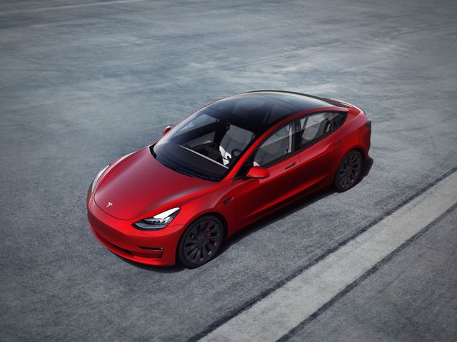
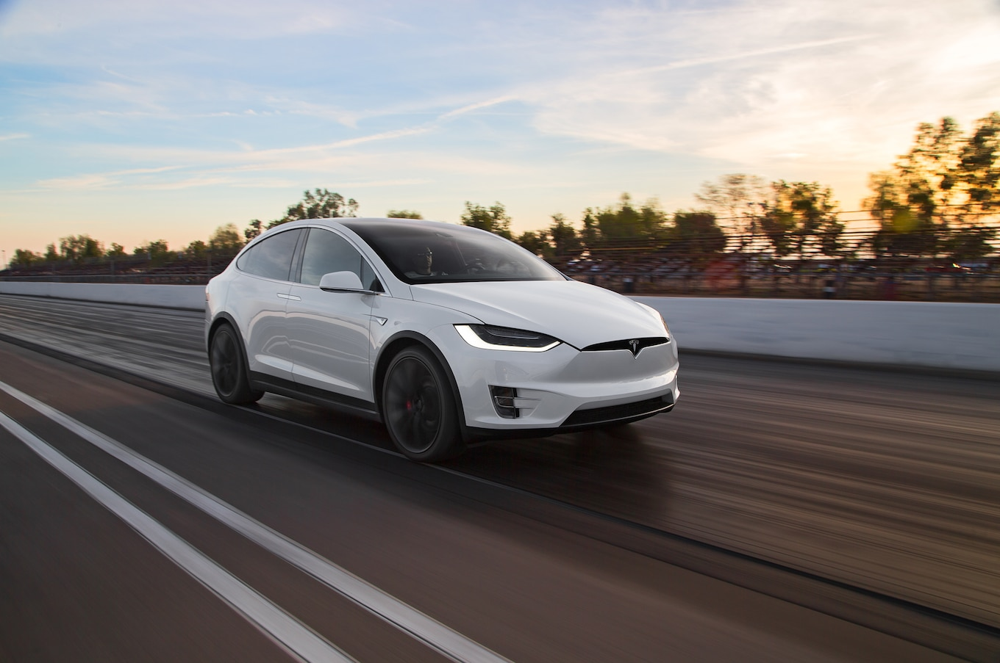
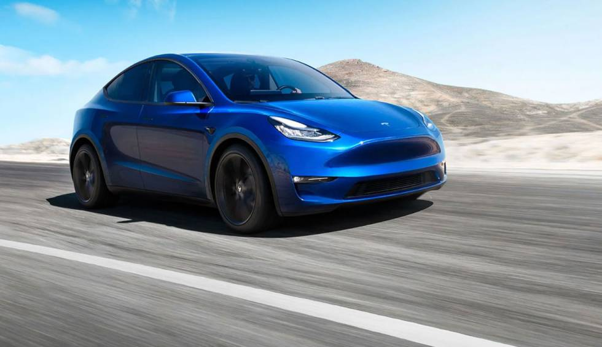
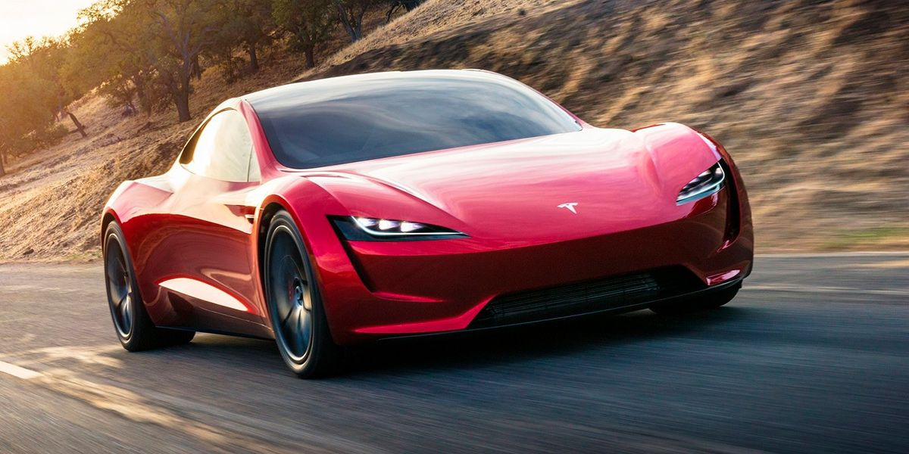

Historia
Tesla se fundó en 2003 por un grupo de ingenieros que querían probar que la gente no tenía que realizar concesiones para conducir vehículos eléctricos, y que estos podían ser mejores, más rápidos y más divertidos de conducir que los vehículos de gasolina.
Model S
Que se acabaría convirtiendo en el mejor turismo de su clase en todas las categorías. Con una excelente combinación de seguridad, rendimiento y eficiencia, el Model S ha redefinido las expectativas de todo el mundo en torno al coche del siglo XXI, y ofrece la máxima autonomía de todos los vehículos eléctricos, junto con actualizaciones de software inalámbricas que lo mejoran a cada instante, y todo ello con una aceleración récord de 0 a 60 millas por hora en solo 2,28 segundos, según la medición de Motor Trend.
Autonomía 663 km (est.) // Potencia máxima670 CV. // Llantas19" o 21" // Espacio de carga793 litros. // Aceleración0 a 100 km/h en 3,2 segundos.

Model 3
Un vehículo eléctrico asequible fabricado a gran escala cuya producción comenzó en 2017. Poco después, Tesla presentó el camión más seguro y cómodo de todos los tiempos
De 0 a 100 km/h // 580 km Autonomía (WLTP) // AWD Motor dual
Model X
El vehículo todoterreno deportivo más seguro, rápido y versátil hasta la fecha, gracias a sus 5 estrellas de seguridad en todas las categorías, según la National Highway Traffic Safety Administration.
547 km Autonomía (est.) // 2,6 s 0-100 km/h* // 9,9 s 1/4 de milla // 1020 CV Potencia máxima
Model Y
Un SUV de tamaño medio con capacidad de hasta siete asientos.
1,9 m³ Espacio de carga // 505 km Autonomía (est. según WLTP) // AWD Motor dual
Roadster
El coche más rápido del mundo, con el récord de aceleración, autonomía y rendimiento.
2,1s 0-100 km/h // +400km/h Velocidad máxima // 1000km Autonomía
Cybertruck
Que ofrecerá una mayor utilidad que una furgoneta tradicional y un mejor rendimiento que un coche deportivo.